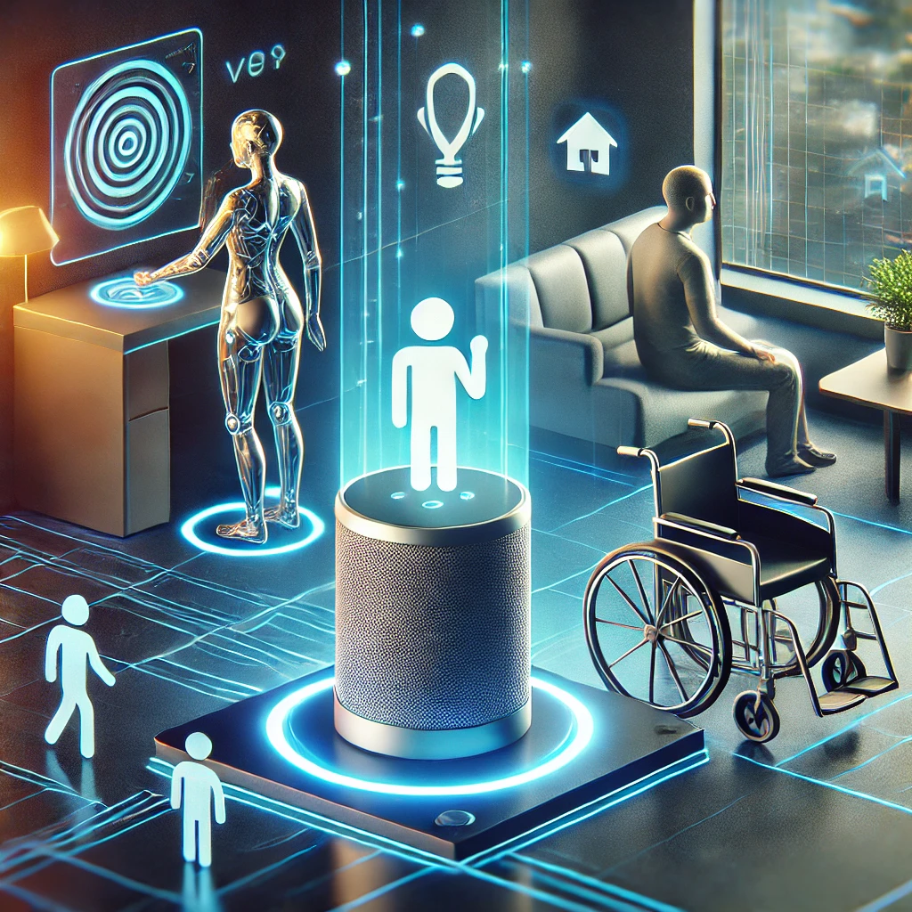

The voice-controlled assistants are helpful for independence and convenience for people with disabilities. They assist the users to input commands and ask questions and in the same way, they get the output without having to type a single word. For example, blind persons can use voice commands to navigate through the application or to listen to the text being displayed on the screen, and people with mobility problems can also control and manage home appliances with their voices. It also promotes the idea of inclusivity because it removes the barriers to access technologies. In addition, the integration of voice-controlled assistants with smart home technologies improves the quality of life of people with disabilities. For instance, the autonomous functions that give a reminder of the medication schedule, the voice control of emergency help, and the personal regimes are beneficial not only from the physical but also from the emotional point of view. In this way, the tools enable people to function independently and perform everyday activities on their own.
“Generated using DALL·E by OpenAI, [February 7th, 2025 ]”
